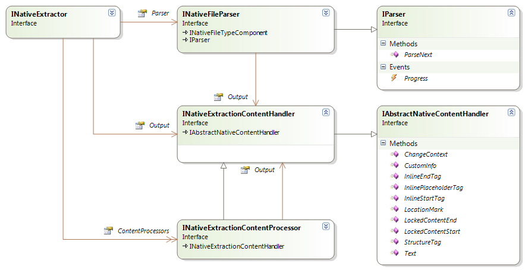
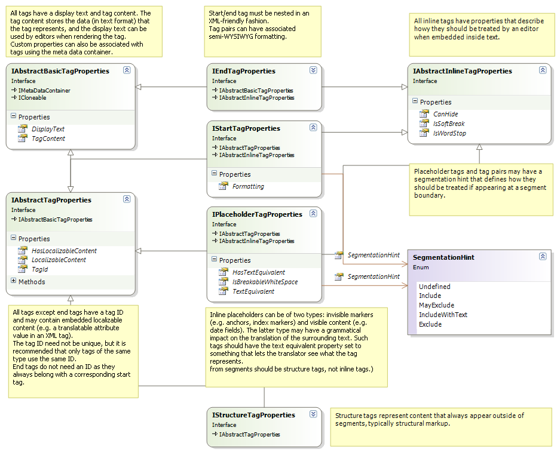
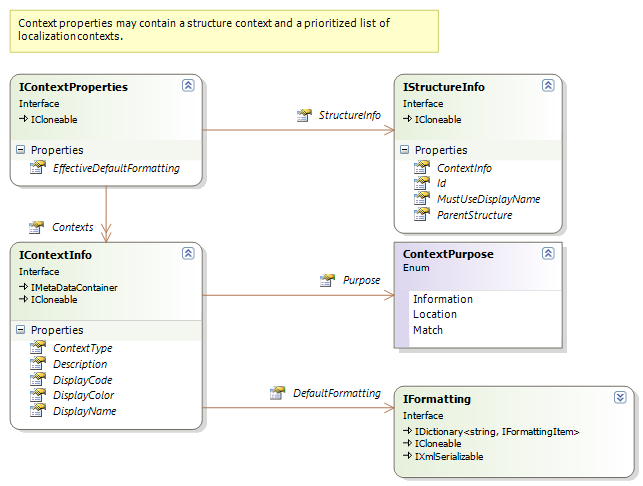
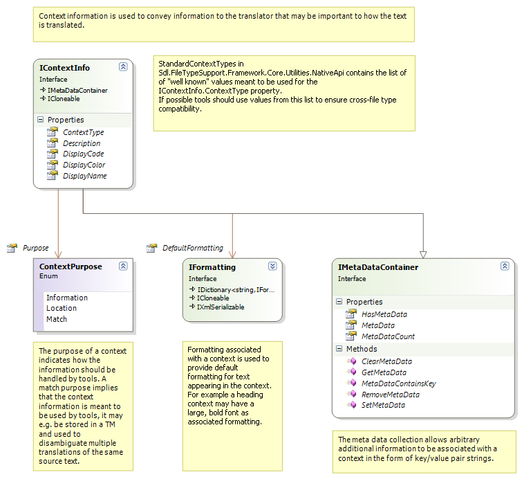
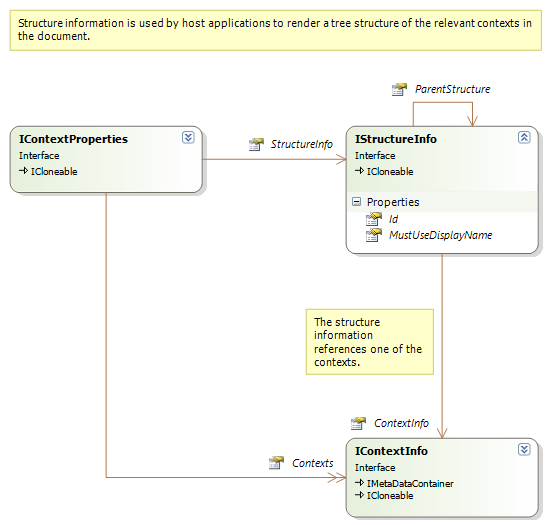
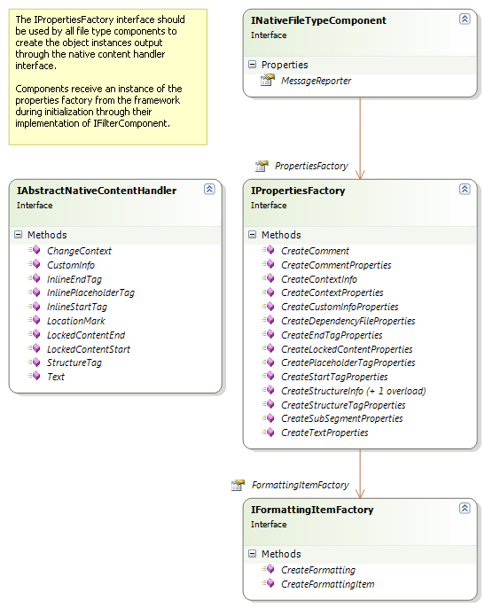
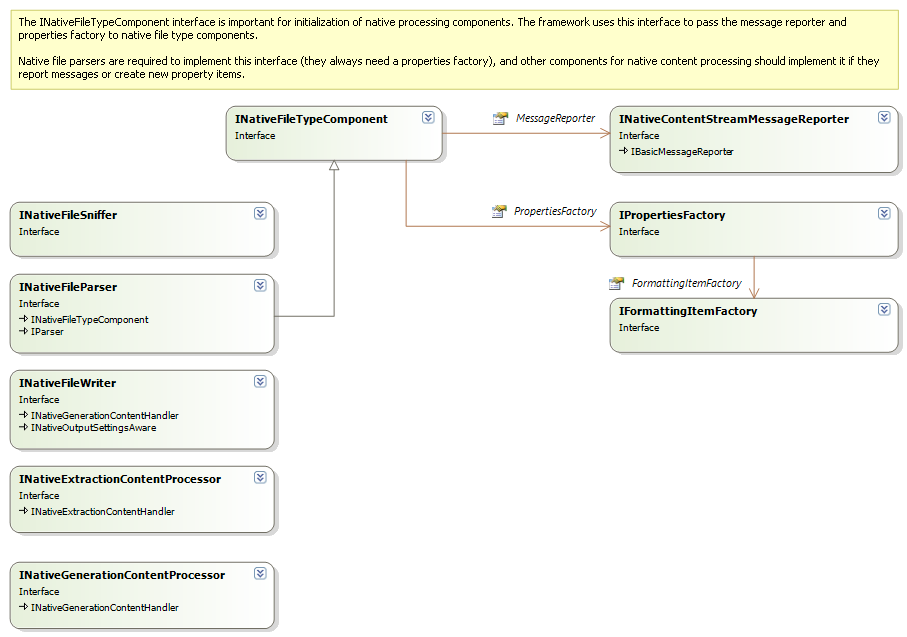
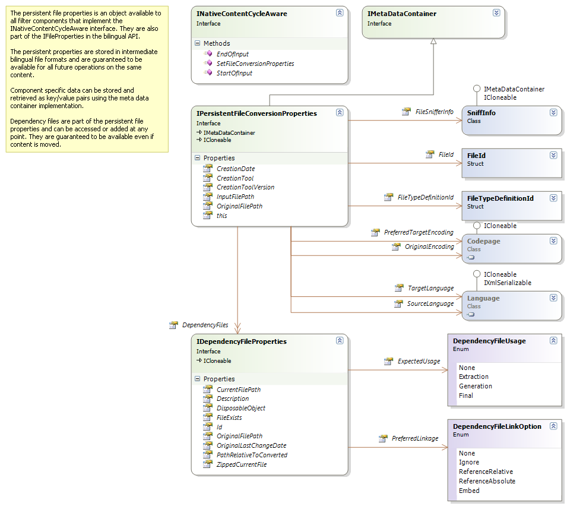
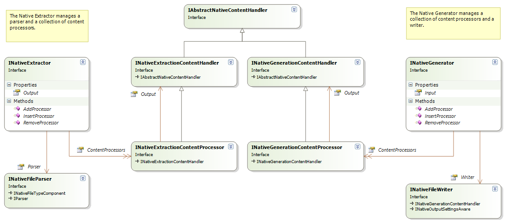
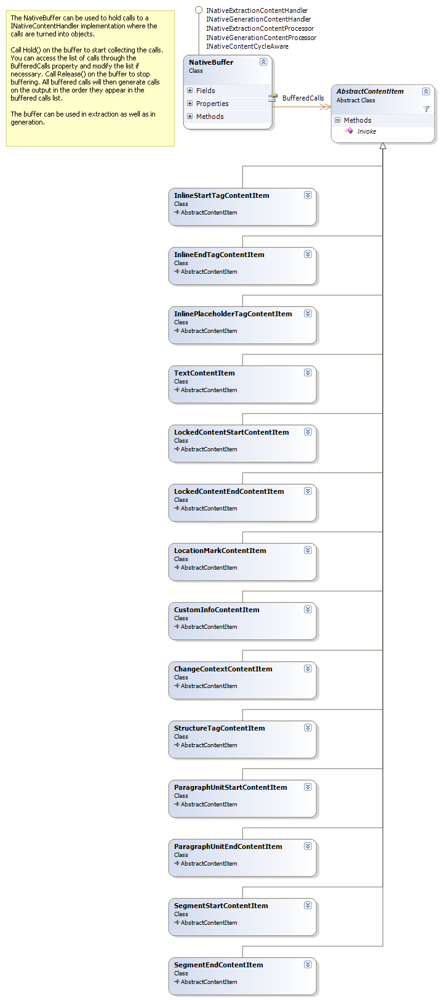

Overview of the Native API
This section provides a high-level overview of the Native API.
The Native API provides the functionality that you need to build filters and filter components for monolingual content in a native document format, such as Microsoft Word. You can build most file filters and file-processing components in Trados Studio by using only this API. You only need a different approach when you must explicitly process bilingual content, such as TTX or ITD files.
Native content handler
The core of the Native API is the IAbstractNativeContentHandler interface. All content processing, whether input, output, or both, passes through this interface. This interface is similar to the IEvents interface in File Type Support Framework 1. The following diagram shows the native content handler interface and the components that relate to it:

Parsers use this interface to generate output. Writers use the interface as input: the writer implements the interface and receives calls from other filter components. Native content processors use the interface as both input and output. They receive calls through their implementation and then forward corresponding calls to another content handler.
Text and tags
Localizable content that is processed in the framework is divided into text and tags. All localizable text processed by the framework is passed through the Text method in this interface. Tags are passed as calls to either of the following methods:
- StructureTag: represents structural information in the file. This is the equivalent of external tags in File Type Support Framework 1.
- InlinePlaceholderTag: represents standalone tags that can appear inside localizable text and that translators may need to place or duplicate. This is the equivalent of standalone inline tags in File Type Support Framework 1.
- InlineStartTag and
InlineEndTag: represent paired tags that can appear inside localizable text and that translators usually need to place or duplicate as a pair. The framework requires these calls to follow standard XML nesting rules:- Each call to
InlineStartTag()must be matched by a later call toInlineEndTag(). Text content usually appears within a start and end tag and can include other nested tag pairs. - A call to
InlineEndTag()must never occur before the corresponding call toInlineStartTag(). - A call to
InlineEndTag()always matches the last unmatched call toInlineStartTag().
- Each call to
If you do not follow these nesting rules, the framework throws an exception. File Type Support Framework 1 did not enforce these rules explicitly, but filters still nested start and end tags in the same way in practice.
Each of the methods in the content handler interface take property objects, which describe the actual data passed through the call. The tag properties have the following relations and content:

All property objects implement the ICloneable interface. The framework clones them when it inserts them into bilingual content models or buffers. This behavior prevents implicit changes to the properties.
Context information
Information on the structure of the file and other relevant context information that may be relevant for the translation can also be communicated through the framework. For this purpose, the method ChangeContext is used.
The context properties that you pass to ChangeContext() contain both document structure information and localization context information:

Localization context information is a prioritized list of individual contexts. Put the context that matters most for translation first in the list. Each context has the following structure:

If localization tools should use a context to affect recycling or disambiguate multiple translation memory matches, set its Purpose property to Match. If the context only provides additional information to the translator, set its purpose to Information. The Location purpose is used by the framework in the bilingual content model to reference the location of the tag for paragraph units that contain localizable tag content.
The StandardContextTypes list defines well-known context types. Use these types whenever possible to ensure the best tool support and cross-file-type compatibility. If none of the well-known types fit, define a custom context.
You can store additional context information in the IMetaDataContainer key/value collection. This metadata lets filters and filter components exchange document metadata. The default bilingual file format also serializes this metadata with the context.
A context can also include semi-WYSIWYG formatting. If several contexts include formatting information, use the combined formatting as the base formatting for all paragraph units to which the contexts apply. You can retrieve the combined formatting from the EffectiveDefaultFormatting property.
Other context properties control how the context is displayed to the user. Filter components should only set these properties for contexts that are not part of StandardContextTypes.
Document structure
The document structure context can be used to generate an overview of the document content. It contains the following information:

All property objects that pass through the IAbstractNativeContentHandler methods are created by a property factory that the framework provides. The IPropertiesFactory interface looks like this:

Native file type components
Filter components can implement INativeFileTypeComponent, as shown in the following diagram:

The framework uses this interface to provide services such as the properties factory and the message reporter to filter components. When you create your own components, you can derive them from AbstractNativeFileTypeComponent or one of its derived classes, although this is optional:
- AbstractNativeFileWriter
- AbstractNativeFileParser
- AbstractNativeGenerationContentProcessor
- AbstractNativeExtractionGenerationContentProcessor
These classes implement the interface for you. You can then access the properties factory and the message reporter directly through their properties without adding extra implementation code.
Components can also implement the INativeContentCycleAware interface. The framework uses this interface to notify components when parsing starts and ends. It also lets components store and retrieve settings that persist as part of the bilingual format:

Extractor, generator, and buffering
You can group native filter components together to perform reading and writing operations through the Extractor and Generator converters:

The forward converter manages a file parser and an associated set of content processors that work together to convert content from the native format. The backward converter similarly manages a collection of content processors and a writer that operate as a single unit.
Content processors typically apply specialized tasks to the content stream. Examples include detecting localizable content inside tags, marking up embedded HTML content in strings, and converting XML, SGML, or HTML entities. When you develop content processors, you sometimes need to inspect later content in the stream before you can process earlier content. In that case, the component must buffer the stream until it has enough information to continue. The framework provides a buffer component for this purpose:

Note
This content may be out-of-date. To check the latest information on this topic, inspect the libraries using the Visual Studio Object Browser.